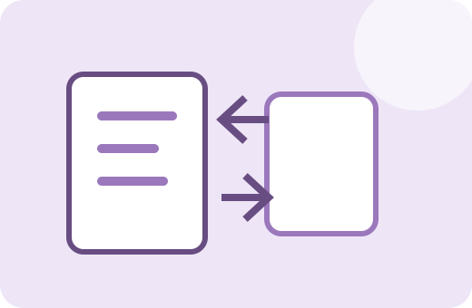

FACTORY ONE · PDF TOOL
PDF 용량 줄이기
PDF 페이지를 경량화해 파일 크기를 줄입니다. 원본 크기와 결과 크기를 비교하면서 제출·전송에 적절한 파일을 만들 수 있습니다.
용량 비교품질 조절브라우저 처리

PDF 용량 줄이기
PDF를 선택하세요.
이 방식은 각 페이지를 이미지로 다시 만들어 용량을 줄입니다. 텍스트 선택 기능은 사라질 수 있습니다.
사용방법
- 용량을 줄일 PDF를 선택합니다.
- 지원되는 품질·크기 옵션을 설정합니다.
- 압축을 실행해 결과 용량을 확인합니다.
- 품질을 확인한 뒤 결과 PDF를 저장합니다.
처리 기준과 주의사항
현재 도구는 페이지를 이미지 기반으로 다시 구성하는 방식이 포함될 수 있어 텍스트·벡터 선명도와 검색 가능성이 달라질 수 있습니다.
중요한 원본 파일은 별도로 보관하고, 결과 파일은 저장 후 한 번 열어 내용과 품질을 확인하는 것을 권장합니다.
실제 사용 예시
이메일 첨부 제한 때문에 18MB PDF가 너무 크다면 품질을 조절해 더 작은 파일을 만든 뒤 화면 가독성을 확인할 수 있습니다.
자주 묻는 질문
무조건 화질이 유지되나요?
아니요. 용량을 줄일수록 품질 손실 가능성이 있습니다. 결과를 반드시 확인하세요.
텍스트 검색이 유지되나요?
이미지 기반 재구성 방식에서는 원래 텍스트 레이어가 유지되지 않을 수 있습니다.
댓글 · 사용후기
질문이나 사용 후기를 남겨주세요.